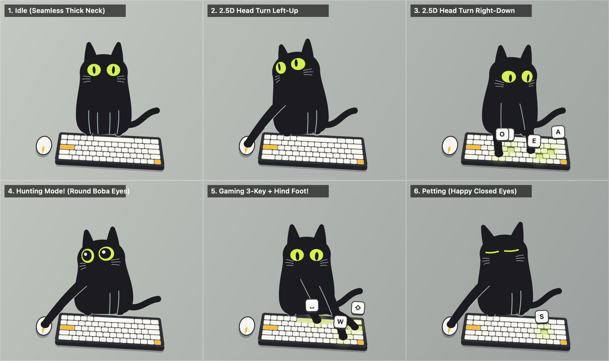
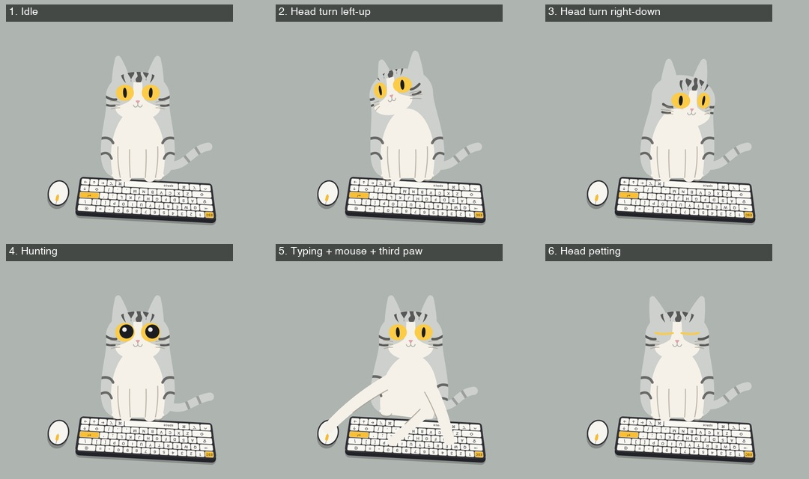
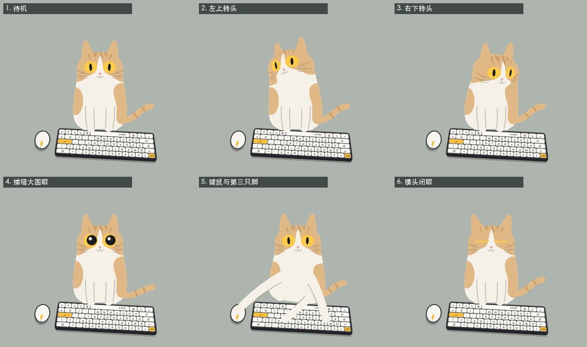
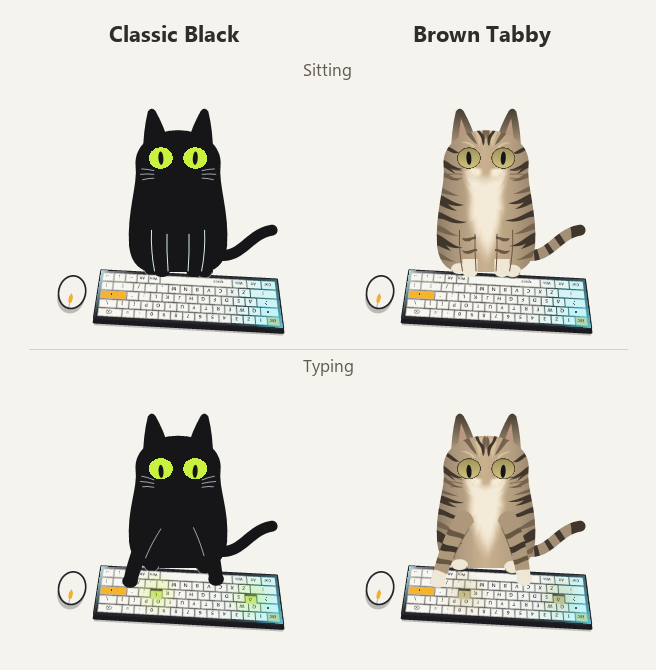

国内直链推荐
KuroCat 国内高速下载页
WorkBuddy 同域托管加速镜像，无需代理秒下 macOS、Windows、Linux 与统信 UOS 安装包，附带完整 SHA 256 校验值与小红书评论区高频答疑。
kurocat-download.app.workbuddy.host
进入页面
KuroCat 是专为 macOS、Windows、Linux 与统信 UOS 打造的原生轻量桌面萌猫。打字、玩游戏、画数位板与 OBS 直播全场景跟手，支持拖入自定义皮肤，所有键鼠信号仅在本机内存运行。
小猫正在页面右下角陪你逛官网
继续滚动页面、敲键盘或拖拽它到屏幕任意角落
无论是国内高速下载、在线 DIY 自家猫咪、逛社区皮肤与键盘广场，还是翻看 MIT 源码与格式文档，都可以从这里直达。
WorkBuddy 同域托管加速镜像，无需代理秒下 macOS、Windows、Linux 与统信 UOS 安装包，附带完整 SHA 256 校验值与小红书评论区高频答疑。
浏览器直接把自家猫做成 2.5D 桌宠，支持照片取色、贝塞尔花纹分区与贴纸配饰；社区广场收录小豆泥、怪猎呆猫、狸花猫、棕虎斑与多款自定义键盘。
三端原生代码全部公开可审计，所有安装包均由 GitHub Actions 自动构建发布。欢迎点亮 Star、提交 Bug 反馈或直接发 PR 贡献新皮肤与优化。
查阅 .kurocat v1 部位坐标系、曲线分区与贴纸锚点说明，或者快速了解如何把原创猫咪皮肤、键盘配色提交到官方社区广场。
不是笨重的网页套壳， 也不偷录任何一次按键。 每一帧转头、眨眼与拍键， 都在你本机原生渲染。
从底层原生输入捕获到 2.5D 矢量物理动画，为写代码、打游戏、画插画与开直播打磨每一个细节。
macOS 使用 IOHIDManager 与 CGEventTap，Windows 使用 Raw Input，Linux 使用 XInput2 与 evdev。日常打字、游戏长按 WASD、组合键与压感笔绘画全跟手，同时按下 3 键翘后脚、4 键摇尾巴踩键。
猫头、耳朵、瞳孔与胡须随光标做球面透视转动。快速晃鼠标触发捕猎大圆眼，轻抚眯眼呼噜，拎起后颈触发 2D 惯性拖尾与修长悬空体态，闲置久了打哈欠团成猫球并在睡熟后自动降帧节能。
三端同步支持 OBS 透明窗口捕获与绿幕模式（#00FF00），轻松挂进 OBS、抖音直播伴侣与 B 站直播姬。支持全屏视频与游戏自动隐藏、置顶巡检、自由旋转 ±180° 磁吸对齐与完全鼠标穿透。
拒绝百兆 Electron 壳，Windows 单文件仅约 802 KB，macOS 通用包不到 1 MB。支持拖入自定义 .kurocat 猫咪皮肤与 .kurokb 键盘皮肤，内置小豆泥漫画风与怪猎呆猫专属渲染，更新版本永久保留收藏。
支持柔和白色贴纸外描边（深色桌面与代码编辑器下同样立体），每一款皮肤都可以直接在桌面拖放切换。





前往皮肤广场免费下载小豆泥漫画风、怪物猎人艾露猫、阿比西尼亚、海盐蓝白键盘等作品，或亲手捏一只独一无二的桌宠。
面向 macOS、Windows 与 Linux 桌面用户的客观参数对照，一眼看懂原生引擎的差距。
| 对比维度 | KuroCat (v1.4.3) | 传统 Bongo Cat | Electron 网页桌宠 |
|---|---|---|---|
| 技术架构与体积 | 原生 Swift / Win32 C++ / GTK3，单文件约 802 KB | 多为社区魔改版，体积与兼容性参差不齐 | 内置 Chromium，安装包常超 100 MB |
| 覆盖操作系统 | macOS / Windows / Linux / 统信 UOS / 银河麒麟 | 多数仅支持 Windows | 跨平台但内存占用高 |
| OBS 直播与数位板 | 一键透明窗口与绿幕模式，自动识别数位板压感笔 | 需手动配置配置文件与外部插件 | 通常仅支持静态窗口或基础键鼠 |
| 换装与自定义皮肤 | 开放 .kurocat 与 .kurokb 格式，提供在线皮肤工坊与广场 | 需手工替换多张 PNG 切片图 | 部分闭源收费皮肤 |
| 游戏穿透与待机功耗 | 透明穿透、全屏自动隐藏、睡眠自动降帧节能 | 缺少全屏自动避让与睡眠节能 | 常驻进程容易占用较高内存与 CPU |
| 隐私与开源协议 | MIT 完全开源，零按键上传、不写键盘日志，完全免费 | 部分二改整合包来源不明 | 闭源居多，网络行为难以审计 |
默认提供国内高速直链镜像与 GitHub 官方 Release 双线路，所有安装包均由 GitHub Actions 自动构建并附带 SHA 256 校验值。
自动识别当前设备系统，国内网络优先走高速直链，海外网络可随时切换 GitHub Releases。
Windows 双击单文件直接运行，macOS 拖入应用程序并勾选输入监控，Linux 支持 .deb 或免密码 tar.gz。
右键打开原生设置页切换 OBS、数位板与描边，从皮肤广场拖入 .kurocat 或 .kurokb 秒换造型。
单个压缩包原生兼容 Apple Silicon（M 系列）与 Intel 芯片，支持 macOS 11 及以上。已使用稳定证书签名，后续升级无需重授输入监控权限。
85b85ca6c01099a4e80345370d66c9a38dcb8a304cb753a1f3ab3ad43601013e
零外部运行时依赖，兼容 Windows 7 SP1 到 Windows 11。双击直接运行并常驻系统托盘，已内置原生应用内自更新与 DPI 高分屏自适应。
a54e4ed722e8905c37cf8f91bb242cc13a26228833006a40626ec85987a12f06
基于 Debian 10（glibc 2.28）编译，广泛兼容 Ubuntu、Debian、Deepin、统信 UOS 20、银河麒麟 V10、Arch 与 Fedora。支持 .deb 与免密码用户目录安装 tar.gz。
隐私安全、直播配置、系统拦截与国产系统安装答疑汇总。还有疑问欢迎直接去 GitHub 提 Issue。
不会。所有键盘与鼠标信号仅在本地内存中驱动小猫动画与计数，不写按键日志、不上传任何按键内容。仅在检查更新时向官方下载站查询最新版本号，全部源码以 MIT 协议公开可审计。
KuroCat 采用 Swift、Win32 C++ 与 GTK3 Cairo 原生开发，Windows 单文件仅约 802 KB，横跨 macOS、Windows、Linux 与统信 UOS。除全键无冲拍键外，还自带 2.5D 球面转头、捕猎圆瞳、2.5D 数位板、OBS 透明与绿幕模式、2D 惯性拎起拖拽以及在线皮肤工坊。
右键小猫或托盘图标，在设置中开启「OBS 透明窗口捕获」或「OBS 绿幕模式（#00FF00）」，然后在直播软件中添加窗口采集即可。开启 OBS 模式后会自动禁用全屏隐藏，防止画面意外消失。
透明区域本身默认穿透；开启完全穿透后可直接点击顶部菜单栏（macOS）或右下角系统托盘（Windows / Linux）的 KuroCat 图标打开菜单。macOS 按住 Option 键、Windows 按 Ctrl + Alt + Shift + P 也能随时唤起。
首次打开时右键 KuroCat.app 点「打开」并在弹窗里再确认一次；接着前往「系统设置 → 隐私与安全性 → 输入监控」勾选 KuroCat，并从顶部菜单栏点击重启即可正常监听键盘。
个人开源软件未购买商业代码签名证书，新版发布初期容易被 SmartScreen 提示不常见下载。比对本页与 GitHub Release 的 SHA 256 校验值一致后，选择「更多信息 → 仍要运行」即可，也可直接拉取源码本地编译。
可以。Linux 包在 Debian 10（glibc 2.28）环境编译，兼容统信 UOS 20 与银河麒麟 V10，同时提供 x86_64 与 ARM64 架构。不方便输入管理员密码时推荐使用 tar.gz 免密码安装脚本。
打开 KuroCat 皮肤工坊网页，支持上传照片自动分析毛色、手绘曲线花纹分区与 2.5D 配饰贴纸。导出 .kurocat 文件直接拖到桌宠身上即可生效，也可以点击「投稿到广场」提交 PR 上线社区。